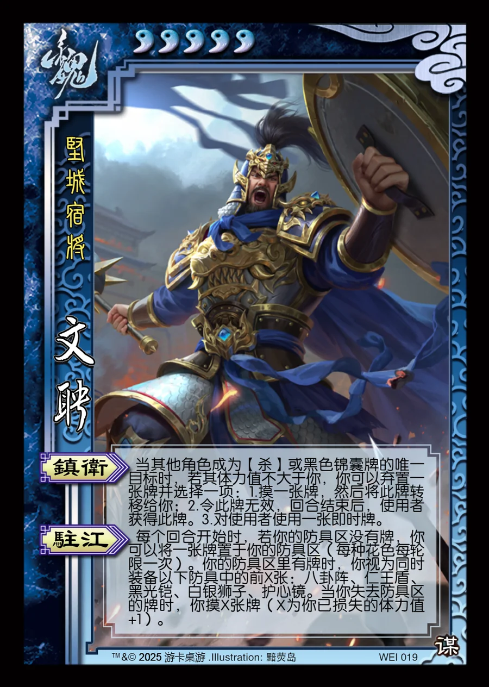

点击卡面查看大图
魏
谋文聘
♥5坚城宿将
镇卫
当其他角色成为【杀】或黑色锦囊牌的唯一目标时，若其体力值不大于你，你可以弃置一张牌并选择一项：1.摸一张牌，然后将此牌转移给你；2.令此牌无效，回合结束后，使用者获得此牌。3.对使用者使用一张即时牌。
驻江
每个回合开始时，若你的防具区没有牌，你可以将一张牌置于你的防具区（每种花色每轮限一次）。你的防具区里有牌时，你视为同时装备以下防具中的前X张：八卦阵、仁王盾、黑光铠、白银狮子、护心镜。当你失去防具区的牌时，你摸X张牌（X为你已损失的体力值+1）。